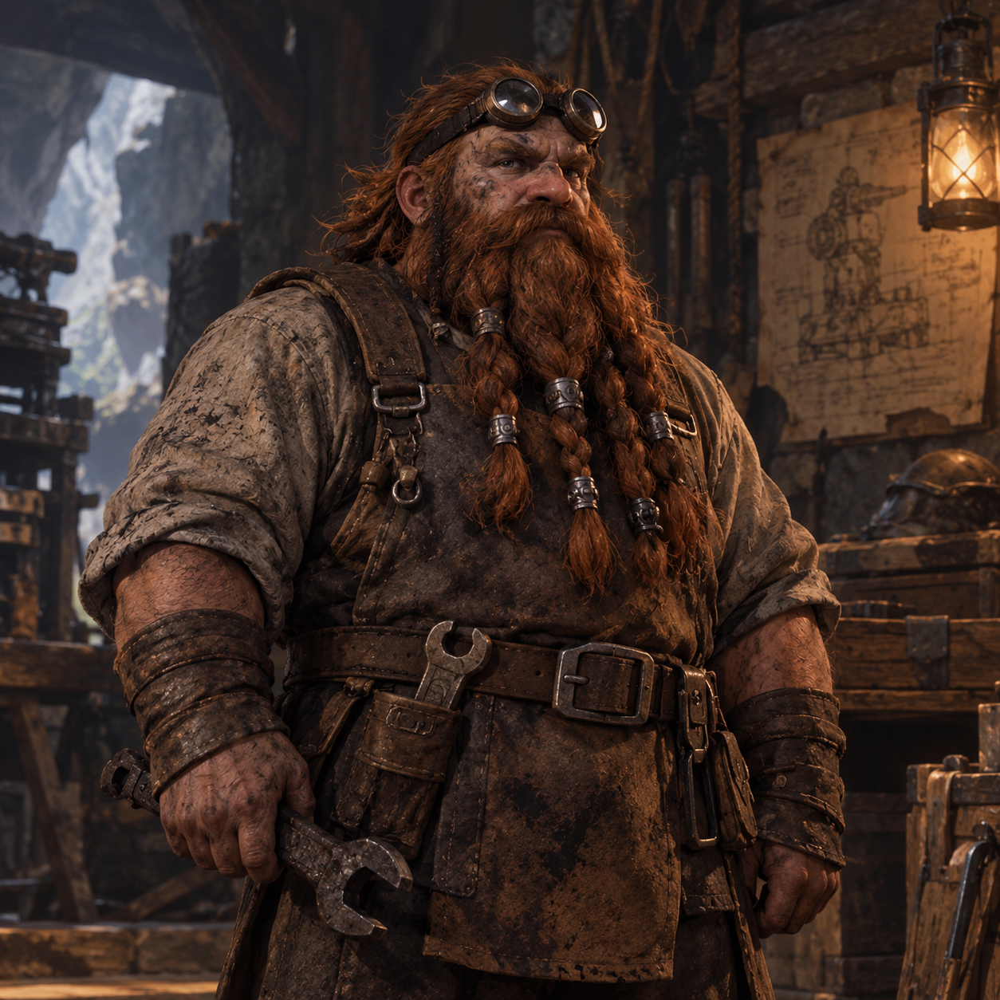
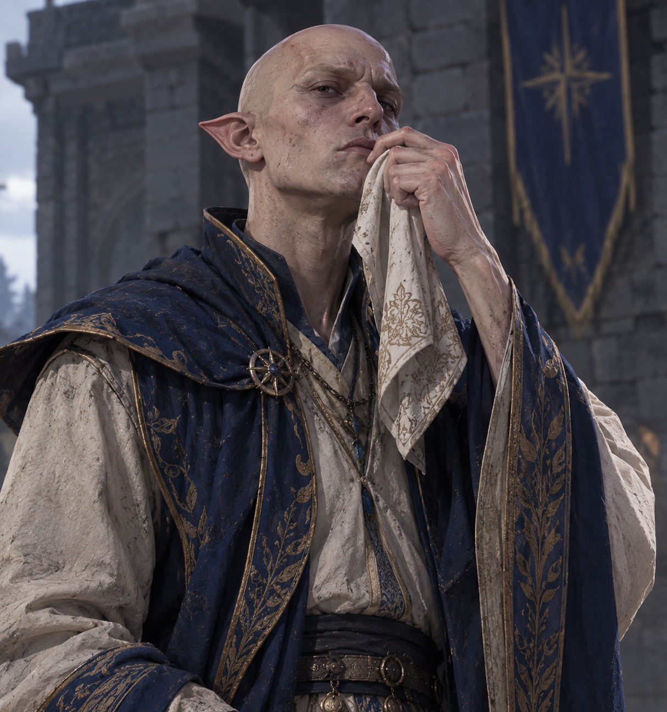

¡Hola! Soy estudiante de ing civil info estudio en la uct y quise hacer una pagina de tipo salon de la fama y un cementerio. Este portafolio es un proyecto donde combino mis conocimientos basico en desarrollo web con las historias de mis personajes de DND ya muertos.
Sobre Mí
Aquí yacen…
Conoce a los aventureros que perdieron la vida durante la campaña de El Trueno del Rey de la Tormenta.
Kulan
"El Muro Sereno"
Raza y Clase
Loxodón Monje - Nivel 5
Paciente y de voz retumbante. Su exceso de confianza en el control de su Ki lo llevó a intentar saltar una grieta gigante, perdiendo la batalla contra la gravedad.

"Las máquinas no traicionan."
Raza y Clase
Enano Artífice - Nivel 4
Ingeniero adicto al trabajo. En un ataque de ambición, intentó domesticar a un dragón salvaje para combinarlo con su armadura tecnológica. Terminó calcinado.

Aelion Solargén
"Apartaos, seres inferiores."
Raza y Clase
Alto Elfo Mago
Noble clasista y arrogante. Discriminó e insultó a un grupo de personas por su tono de piel sin saber que eran los reyes del lugar; murió mientras huía cobardemente.
Invítame a tu Mesa
¿Buscas un jugador para tu próxima campaña? Escríbeme.